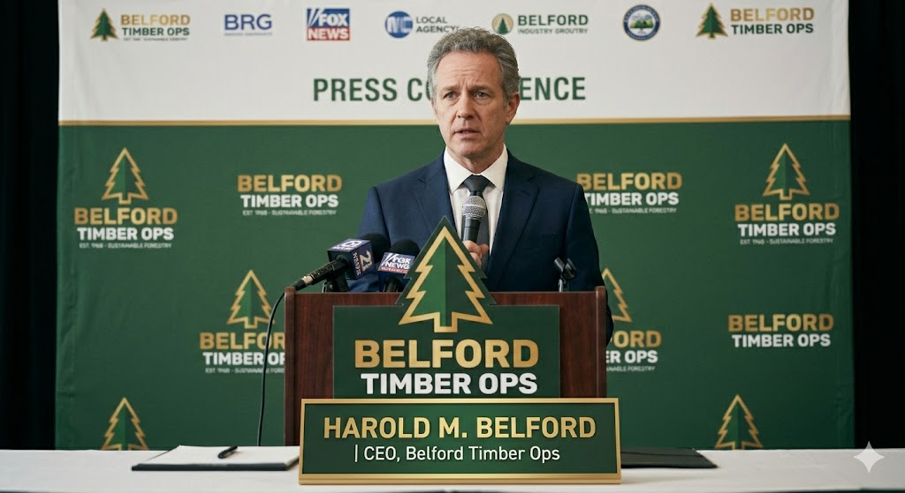

Ocho guardias de seguridad desaparecen durante la noche en el bosque Solomon

Las autoridades del condado de Grayhaven investigan la desaparición de ocho empleados de seguridad privada vinculados a la empresa maderera Belford Timber Operations, tras no regresar de su turno de vigilancia nocturna en las instalaciones situadas en el bosque Solomon.
Los trabajadores formaban parte del equipo contratado para patrullar los perímetros de extracción y almacenamiento de madera en la zona norte del bosque, una región históricamente asociada a actividad forestal intensiva y acceso restringido durante la noche.
Según el informe preliminar de la oficina del Sheriff del condado, los equipos de búsqueda han localizado únicamente dos teléfonos móviles parcialmente dañados en un sendero secundario, junto a huellas interrumpidas en el terreno que se adentran en la zona de vegetación densa. No se han encontrado signos de violencia concluyente ni restos materiales adicionales.
Las operaciones de rastreo continúan, aunque las condiciones del terreno y la falta de cobertura en amplias áreas del bosque están dificultando las labores de localización.
DECLARACIÓN DE BELFORD TIMBER OPS
El director ejecutivo de Belford Timber Ops, Harold M. Belford, emitió un comunicado esta mañana en el que confirmó la desaparición del personal y expresó su “profunda preocupación por la seguridad de nuestros empleados”.
Belford añadió que la empresa había reforzado recientemente sus protocolos de vigilancia debido a “posibles riesgos de sabotaje en áreas de explotación forestal”, aunque aclaró que no existen indicios que vinculen el incidente con actividades humanas organizadas.
“Hemos aumentado la presencia de seguridad en Solomon Ridge precisamente para prevenir incidentes de este tipo. En este momento no tenemos información adicional sobre lo ocurrido, y estamos cooperando plenamente con las autoridades locales”
La compañía no ha confirmado si suspenderá temporalmente sus operaciones en la zona.

El Departamento del Sheriff ha establecido un perímetro de búsqueda ampliado y solicita cualquier información relacionada con movimientos inusuales de vehículos o personal en la zona durante la última noche. Un portavoz del cuerpo policial ha señalado que “todas las posibilidades siguen abiertas”.